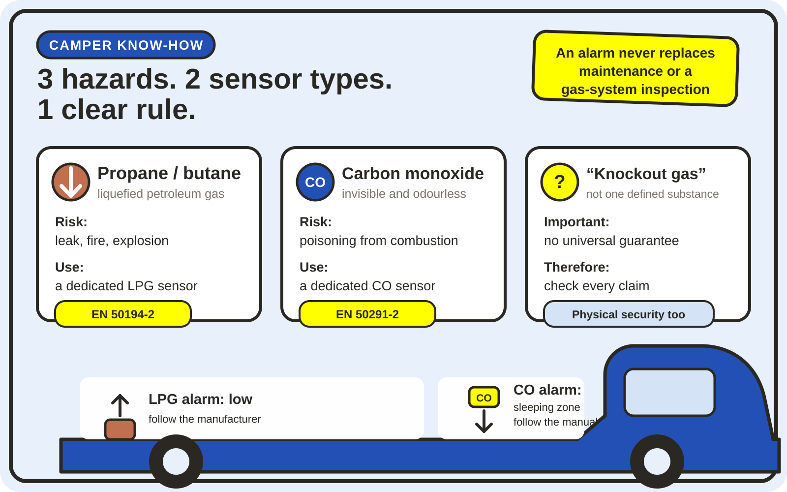

Gas alarms in campers: which detector really protects you?
A small box is expected to watch over us while we sleep. That is reassuring only when its sensor is actually suited to the gas. LPG, carbon monoxide and the frequently advertised “knockout gas” function are three different subjects. I therefore reviewed the 15-product laboratory test published by Reisemobil International in issues 02/2025 and 03/2025 and checked its conclusions against the applicable standards and current safety guidance.

The short version
- For propane and butane, choose a clearly specified LPG sensor.
- For carbon monoxide, choose a dedicated CO sensor. A broad-range LPG sensor is not a reliable substitute.
- Look for EN 50194-2 for combustible-gas alarms or EN 50291-2 for CO alarms intended for recreational vehicles in the current declaration of conformity.
- LPG alarms are normally fitted low, while CO alarms belong in or near the breathing and sleeping zone. Always follow the instructions for the exact device.
- A “knockout-gas alarm” cannot guarantee detection of every imaginable substance. Treat it as an extra function, not as burglary protection.
Three hazards that are too often lumped together
Propane and butane
Combustible LPG can escape from a cylinder, hose, regulator or pipe. This calls for a detector specifically intended for LPG or combustible gases.
Carbon monoxide
This poisonous combustion product is colourless and odourless. It requires a dedicated CO sensor and a different installation position.
“Knockout gas”
This is not one technically defined substance. A sensor can detect only the compounds or groups of compounds for which it was designed and tested.

1. LPG: when propane or butane escapes
LPG often powers a camper’s cooker, heater or refrigerator. If propane or butane escapes unburned, it creates a serious fire and explosion risk and can displace oxygen. Both gases tend to collect low down. An LPG sensor is therefore normally installed near floor level, exactly as specified by its manufacturer, rather than wherever it happens to be convenient.
The relevant reference for fixed alarms in recreational vehicles is DIN EN 50194-2:2020-08. It sets additional test methods and performance requirements for equipment that detects LPG or petrol vapour and produces an audible and visual alarm. A reference to this standard in a current EU declaration of conformity tells you more than a long list of marketing claims.
The alarm is intended to warn before a critical concentration is reached. It cannot stop a leak. Cylinders, regulators, hoses, pipes and appliances still need to be installed and maintained correctly.
2. CO: the invisible combustion hazard
Carbon monoxide can be produced by incomplete combustion, for example when an appliance is faulty, an exhaust is obstructed or unsuitable combustion equipment is used indoors. CO cannot be seen or smelled. That is why an audible CO alarm matters so much in the small sleeping space of a camper.
DIN EN 50291-2:2020-10 covers CO alarms for continuous operation in recreational vehicles and similar environments, including recreational craft. The newer guidance document DIN EN 50292:2024-07 addresses selection, installation, use and maintenance.
A common misconception is that a sensor capable of detecting propane and butane will somehow cover CO as well. In the RMI test, several broad-range sensors advertised for CO did not alarm, whereas separate dedicated CO sensors in the same product systems did. My conclusion is simple: if CO appears on the box, there must be a genuine sensor specified for CO behind that claim.
3. What about “knockout gas”?
Stories of travellers supposedly being sedated with gas during a burglary have circulated for years. The problem begins with the term itself: “knockout gas” does not identify one substance. A detector cannot respond to a word; it can respond only to particular chemical compounds or sensor-relevant groups.
For its supplementary test, RMI used trichloroethylene and selected a concentration of 240 ppm. The magazine explicitly notes that there is no dedicated DIN test standard for a generic “knockout gas” sensor. Its accompanying article also distinguishes between two scenarios: silently delivering enough gas to put awake occupants under is assessed as implausible, while a smaller concentration affecting people who are already asleep is discussed separately. RMI said it had no hard evidence from a documented case.
I would therefore never make this extra feature the main buying criterion. It may be useful when a reliable LPG detector also responds to certain solvent vapours. Door security, an alarm system, a sensible overnight location and alert behaviour remain the proper defences against burglary.
What the 2025 RMI laboratory test actually covered
The photographed reprint combines articles from Reisemobil International 02/2025 and 03/2025. The editors tested 15 products or variants plus optional sensors. In addition to propane/butane, CO and later trichloroethylene response, they considered current draw, alarm volume, self-test behaviour, fault indication, labelling and installation instructions.
For LPG and CO, the editors used the concentration and timing principles of the relevant standards. The trichloroethylene trial was an additional editorial method rather than a specific standard test. An important part of the assessment was whether a device reported a failed sensor and whether its instructions led users to the right mounting position.
The four product families rated positively in the reprint
This table reflects the samples tested in late 2024. It is not a current price guide or a permanent guarantee: hardware, firmware, instructions and model names may have changed since then.
| Product family | Task tested | RMI verdict | Important context |
|---|---|---|---|
| Thitronik G.A.S. | LPG and trichloroethylene | Very good | A hydrocarbon detector; not a CO alarm. |
| Thitronik G.A.S. Pro III | Separate CO or LPG control-unit versions, expandable with the appropriate additional sensor | Very good | Choosing the correct control-unit version and sensor is essential. |
| AS-Schwabe H-AL 8300 | LPG and trichloroethylene | Good | Early warning, but high power use and very high sensitivity in the test; no CO sensor. |
| Carbest Gas-Stick | LPG and trichloroethylene | Good | Highly sensitive and portable; consider its mounting, power supply and possible nuisance alarms. |
The other tested samples were rated “with weaknesses” or “poor” by RMI. I deliberately do not turn a 2025 verdict into a permanent blacklist. Check the exact current model, its declaration of conformity and any newer traceable test report. The full individual results are available in the linked reprint.
My buying checklist
- Define the hazard: LPG, CO or both? Covering both requires two suitable sensors or one system with clearly separate sensor elements.
- Look for the vehicle standard: EN 50194-2 for combustible gases and EN 50291-2 for CO are written for recreational-vehicle conditions.
- Read the declaration of conformity: Do not rely on a CE logo in an online-shop image. The declaration should identify the exact model, the manufacturer and the standards used. The EU explains that CE marking is based on the manufacturer’s responsibility for conformity.
- Check the sensor technology: Insist on a sensor specifically intended for CO. Vague labels such as “3-gas” or “universal” are not enough.
- Check fault and end-of-life signals: A safe unit should visibly or audibly report a sensor fault and the end of its service life.
- Make sure you will hear it: The alarm must wake you at the bed. Anyone with hearing loss may need a compatible visual or vibrating alert.
- Calculate power use: The RMI samples differed greatly in daily consumption. Every amp-hour matters off-grid, but switching protection off overnight is not a solution.
- Read the manual before buying: Clear mounting, spacing, warm-up, testing, cleaning and replacement instructions are a positive sign.
Installation: the wrong place defeats the best sensor
LPG alarms normally belong low in the living space because propane and butane sink. Follow the exact height and clearances in the manual. Avoid dead air pockets, splash zones and positions directly beside cooking vapours, cleaning products or aerosols where the manufacturer warns of nuisance alarms.
CO behaves differently and mixes with room air. Place a CO alarm in or close to the sleeping area exactly as instructed for a camper. Mounting both sensors side by side at floor level merely because it looks tidy is not a safe shortcut.
Hard-wired models need a permanently safe and fused supply. Portable or battery-powered models must be suitable for the intended environment. Test alarms at the interval stated by the manufacturer and replace the battery, sensor or complete unit on time. Never use lighter gas, exhaust fumes or an open flame as a DIY sensor test.
What to do when an alarm sounds
- No flames or smoking, and do not operate electrical switches.
- Move everyone outside immediately.
- Only if it causes no delay or risk: close the cylinder valve and ventilate from outside.
- Call the emergency services if the hazard is strong, persistent or unclear.
- Do not use the gas system again until it has been professionally checked.
- Wake everyone and leave the camper immediately.
- Move into fresh air and stay outside.
- Call the emergency services, especially for headache, dizziness, nausea, drowsiness or breathing difficulty.
- Do not return until responders or a competent professional say it is safe.
- Have the cause identified before using any appliance again.
The German Firefighters Association advises leaving immediately, calling the emergency services and not going back inside after a CO alarm. The same sequence makes sense in a camper, where the air volume is particularly small.
An alarm never replaces a gas-system inspection
In Germany, periodic inspection has been mandatory for qualifying LPG systems in recreational vehicles since 19 June 2025. Section 60 of the StVZO refers to DVGW worksheet G 607. The system must be checked before first use, after relevant modifications and at least every 24 months thereafter. The DVGW explains that the appliances, pipes and overall installation require inspection by a competent person.
This is not duplication. Inspection is intended to prevent and find defects; the alarm is an additional warning if gas or CO is nevertheless present. The two safety layers do different jobs.
Frequently asked questions
Do I need both an LPG and a CO alarm?
If you use an LPG system and fuel-burning appliances, combining both types is sensible. Choose two suitable products or a system with clearly separate LPG and CO sensors. One broad-range sensor with a vague “detects everything” claim would not be my choice.
Will a smoke alarm detect carbon monoxide?
No. A smoke alarm detects smoke particles, while a CO alarm detects carbon monoxide. Combination products exist, but they still need separate sensor technologies designed for the two tasks.
Does the test button prove that the sensor measures correctly?
Depending on the model, the button checks the electronics, indicators and sounder. The manual explains how completely the sensor itself is monitored. A button test does not replace automatic fault monitoring or timely sensor replacement.
Is a CE mark enough?
It is important, but it is not an independent consumer test award. Ask for the current EU declaration of conformity and confirm that it names the exact model and the relevant recreational-vehicle standard.
How long does a gas or CO alarm last?
That depends on the sensor and device. Look for manufacturing, replacement and end-of-life information and follow the shortest applicable interval. A glowing power light does not prove that an old sensor is still accurate.
Conclusion: choose the right protection for each hazard
My most important takeaway from the test is wonderfully simple: specialisation matters more than a long list of gases on the packaging. Propane and butane need an appropriate LPG sensor in the correct low position. Carbon monoxide needs a genuine CO sensor in the sleeping area. Anyone seeking extra detection of particular solvent vapours must check exactly which compounds the manufacturer identifies and supports with evidence.
I would rather buy a well-documented system with two suitable sensors than a cheap universal box with grand promises. Add regular gas inspections, unobstructed ventilation, maintained appliances and an emergency plan known by everyone travelling with you. Safety in a van is not one little box; it is a chain in which every link has to work.
Sources, transparency and date
Information checked on 6 September 2026. The magazine results apply to samples tested in late 2024 and articles published in 2025. Products may have changed since then. This article contains no paid product links and is not a substitute for advice from a qualified LPG professional.
- Reisemobil International: 15 gas alarms in a laboratory test
- Reisemobil International: gas alarms for motorhomes tested
- Reprint from Reisemobil International 02/2025 and 03/2025 (PDF hosted by Thitronik)
- DIN Media: DIN EN 50194-2 — combustible-gas alarms for recreational vehicles
- DIN Media: DIN EN 50291-2 — CO alarms for recreational vehicles
- DIN Media: DIN EN 50292 — selection, installation and maintenance of CO alarms
- DVGW: LPG safety and inspection for campers
- German law: Section 60 StVZO
- German Firefighters Association: action after a CO alarm
- European Union: CE marking and manufacturer responsibility
See you soon and travel safely,
Tussy 💛